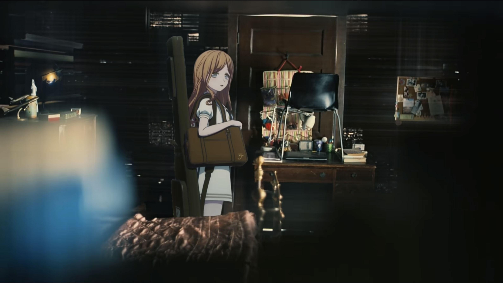

This website is a curated library of photographic and cinematic stills, designed for artists, designers, and enthusiasts. We collect high-quality reference images focusing on composition, lighting, and mood. You can learn more about our website or start exploring.
Navigation
Explore Learn CommunityExplore
Source: Interestellar(2014)
Source: Portrait of a Lady on Fire (2019)
Other Examples (Linked Image from Film-grab)